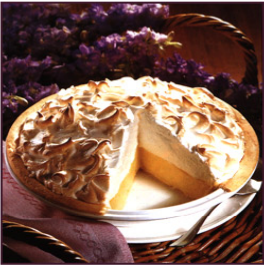

Grandma's Lemon Meringue Pie

one 9-inch pie
30 Min - Prep time
10 Min - cook time
40 Min - total
8 Servings
Ingredients
- 1 cup white sugar
- 3tbsp all-purpose flour
- 3 tbsp cornstrach
- 1/4 tsp salt
- 1 1/2 cups water
- 2 lemons, juiced and zested
- 2 tbsp butter
- 4 eggs yolks, beaten
- 1 (9 inch) pie crust, baked
- 4 egg whites
- 6 tbsp whitee sugar
DIRECTIONS
- Preheat Oven : Preheat oven to 350degree F (175 degrees C).
- Make Lemon Filling: In a medium saucepan ...
- Whisk together 1 cup sugar, flour, cornstarch, and salt.
- Stir in water, lemon juice and lemon zest.
- cook over medium-high heat, Stirring frequently, until mixture comes to a boil.
- Stir in butter.
- Place egg yolks in small bowl and gradually whisk in 1/2 cup of hot sugar mixture.
- whisk egg mixture back into remaining sugar mixture.
- Bring to a boil and continue to cook while stirring constantly until thick.
- Remove from heat.
- Pour filling into baked pastery shell.
- Make Meringue: In a large glass or metal bowl ...
- WWhip egg whites until foamy.
- Add sugar gradually, and continue to whip until stiff peaks form.
- Spread meringue over pie, sealing the edges at the crust.
- Bake: Bake in preheated oven for 10 minutes, or until meringue is golden brown.
this is our favourite recipe here at Granny's Pies, It has been enjoyed by pie fans for many years. It's Granny's favourite! We hole you'll find that this recipe is delicious and also easy to follow; it;s a piece of cake pie!
USER COMMENTS
this is a very fun recipe to follow, because Gransma makes it sweet and simple. this pie is thickened with cornstarch and flour in addition to egg yolks, and contains no milk .
-Emilie S.
Q: What do you call an ape who loves pie?
A: A meringue-utan
-Vickie K.
this site can really engage my interest, follow the recipe above and make it so! This pie is number one
LINKS
Search for other lemon merginue pie recipes
Home
CopyRight © 2012 Granny's Pies
A granny 's Pies Productions
all right reserved